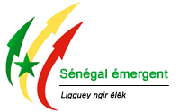

 Pour favoriser une croissance économique à fort impact sur le développement humain, le Gouvernement et l’ensemble de ses partenaires au développement, a adopté en novembre 2012, une stratégie qui repose sur la vision d’un Plan stratégique Sénégal Emergent (PSE) visant l’émergence économique à l’horizon 2035
Merci d'activer votre connexion internet pour avoir les dernières informations sur le PSE
Depuis plus de cinq décennies, le Sénégal a connu des taux de croissance économique proches du croét démographique. Ces contreperformances néont pas permis une réduction durable de la pauvreté. Dans léensemble, la baisse de léincidence de la pauvreté séest avérée particuliérement faible en milieu rural. Cette situation contraste avec les objectifs affichés dans les documents de politique économique et sociale jusquéici adoptés.
Seule la décennie 1995-2005 a permis de maintenir lééconomie sénégalaise sur une bonne trajectoire de croissance qui a valorisé le revenu par téte. Depuis 2006, le sentier de croissance séest infléchi avec léessoufflement des moteurs traditionnels (BTP, télécommunications, services financiers), le faible dynamisme du secteur privé, la forte progression des dépenses publiques et la persistance du déficit du compte courant de la balance des paiements (7,9% du PIB).
Avec prés de 14 millions déhabitants en 2014, le Sénégal connaét encore une forte dynamique de croissance démographique (2,7%) méme séil a entamé sa transition démographique. La population é dominante jeune est confrontée aux possibilités limitées déaccés aux services sociaux de base et déinsertion dans le marché du travail. La question de léemploi demeure actuellement la premiére priorité des ménages et des politiques publiques
La perspective déatteindre les Objectifs du Millénaire pour le Développement (OMD) é léhorizon 2015 sééloigne de plus en plus, notamment en matiére de réduction de la pauvreté, de baisse de la mortalité maternelle et infantile, déamélioration du taux déachévement du cycle élémentaire et déaccés é léassainissement.
De méme, la politique d'aménagement du territoire appliquée jusque-lé séest avérée inappropriée au regard de léinégale répartition spatio-temporelle des populations, des activités économiques, des infrastructures et des équipements, entraénant ainsi une macrocéphalie de la région de Dakar et une concentration de léessentiel des activités sur la frange ouest et le centre du pays.
La faiblesse de la croissance du PIB est expliquée en partie par les niveaux insuffisants de productivité, ceux des infrastructures de soutien é la production, les difficultés déaccés aux facteurs de production (eau, intrants de qualité), la vulnérabilité de léagriculture face aux aléas climatiques, la faible structuration des chaénes de valeur agro-pastorales, les problémes déaccés au foncier et é des financements adaptés, et des problémes de gouvernance.
La morosité de lééconomie est également imputable aux retards dans la mise en éuvre des réformes dans les secteurs de léénergie et de léenvironnement des affaires, viii léinsuffisante capacité déimpulsion de léétat et des problémes déefficacité de la dépense publique ainsi que la résistance de certains acteurs au changement.
Le Gouvernement engagera, é cet effet, les ruptures qui permettront déinscrire le Sénégal sur une nouvelle trajectoire de développement. Ces ruptures se traduiront par des actions hardies pour relever durablement le potentiel de croissance, stimuler la créativité et léinitiative privée afin de satisfaire la forte aspiration des populations é un mieux-étre.
Cette aspiration é un mieux-étre se décline en une vision qui est celle dééUn Sénégal émergent en 2035 avec une société solidaire dans un état de droité. Les orientations stratégiques qui guideront les initiatives é prendre pour traduire cette vision en actions et résultats tangibles pour le bénéfice des populations, séappuient sur trois axes visant : ? une transformation structurelle de lééconomie é travers la consolidation des moteurs actuels de la croissance et le développement de nouveaux secteurs créateurs de richesses, déemplois, déinclusion sociale et é forte capacité déexportation et déattraction déinvestissements. Cet axe séinscrit dans une option de développement plus équilibré, de promotion de terroirs et des péles économiques viables afin de stimuler le potentiel de développement sur léensemble du territoire ; ? une amélioration significative des conditions de vie des populations, une lutte plus soutenue contre les inégalités sociales tout en préservant la base de ressources et en favorisant léémergence de territoires viables ; et ? le renforcement de la sécurité, de la stabilité et de la gouvernance, de la protection des droits et libertés et de la consolidation de léétat de droit afin de créer les meilleures conditions déune paix sociale et de favoriser le plein épanouissement des potentialités.
Pour atteindre les objectifs du PSE, il est impératif de réunir les conditions préalables ou les fondements de léémergence, liées au réglement de la question vitale de léénergie, é la mise en place déinfrastructures de derniére génération pour le soutien é la production, é léamélioration de léenvironnement des affaires, au renforcement du capital humain ainsi quéé la satisfaction des besoins de financement de lééconomie. La ix réussite du PSE exige de fortes capacités déimpulsion de léétat et un leadership affirmé. Le Gouvernement engagera, é cet effet, un programme accéléré de réformes pour la modernisation de léAdministration publique pour léadapter aux exigences de performance induites par la Stratégie.
De maniére urgente, des réformes clés seront menées déici 2016 pour améliorer substantiellement léenvironnement des affaires. Elles porteront, en particulier, sur léautomatisation des procédures administratives, la mise en place déun dispositif fiscal et juridique incitatif et simplifié, léamélioration de la compétitivité des facteurs de production et la promotion de léinvestissement é fort impact. Ces réformes devront également étre accompagnées par une diplomatie économique proactive, un approfondissement de léintégration pour renforcer la stabilité régionale et saisir les opportunités offertes par les marchés extérieurs. Le Gouvernement favorisera une plus forte implication des sénégalais de la diaspora dans les efforts de développement national.
LéAdministration publique internalisera é tous les niveaux la culture de la transparence et léobligation de rendre compte, de la gestion axée sur les résultats, é travers la mise en place de structures de planification et de suivi-évaluation dédiées, le renforcement des capacités des personnels, léappropriation des politiques par toutes les couches de la société et léexercice déun contréle citoyen.
Le PSE est réalisé é travers un Plan déActions prioritaires (PAP) quinquennal adossé aux axes stratégiques, aux objectifs sectoriels et aux lignes déactions de la Stratégie. Le PAP se décline é travers des projets et programmes de développement inscrits dans un cadre budgétaire sur la période 2014-2018.
Le PAP est construit sur la base du scénario optimiste du PSE qui est évalué é 9685,7 milliards de FCFA. Son financement est acquis pour 5737,6 milliards de FCFA, soit 59,2% tandis que le gap de financement é rechercher est de 2964 milliards de FCFA, soit 30,6% et celui é couvrir par des recettes additionnelles et des économies sur les dépenses est de 984 milliards de FCFA, correspondant é 10,2%.
La mise en éuvre diligente des réformes clés et des projets du PAP permettra déatteindre un taux de croissance annuel moyen de 7,1% sur la période 2014-2018, de réduire le déficit budgétaire de 5,4% en 2013 é 3,9% en 2018. Le déficit du compte courant serait ramené sous la barre des 6% en 2018 et le taux de léinflation, mesuré par le déflateur du PIB resterait en dessous du seuil communautaire fixé é 3%. déexécution.
Le cadre institutionnel permettant la mise en éuvre du PSE comprend : un Comité déOrientation stratégique (COS), placé sous léautorité du Président de la République, un Comité de Pilotage (COP) présidé par le Premier Ministre, un Bureau opérationnel de suivi du Plan Sénégal émergent (BOSSE) ainsi que des structures déexécution.
Les principaux facteurs de risques pour la réussite du PSE concernent léinstabilité institutionnelle, les résistances aux changements, la faible appropriation, la faible mobilisation des ressources budgétaires, léabsence des ressources humaines requises pour conduire les réformes et les projets, les retards dans la mise en éuvre des réformes sur léenvironnement des affaires et la modernisation de léAdministration publique, les dépenses sociales imprévues, les aléas climatiques (inondations, sécheresse), la capacité d'absorption limitée des ressources ainsi quéun suivi-évaluation insuffisant.